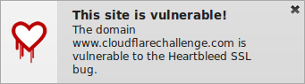

Heartbleed Monitor automatically checks the sites you visit to see if they're vulnerable to Heartbleed (CVE-2014-0160). If they are, you will get a pop-up notification like this:
Click the Heartbleed Monitor icon in the Add-on Bar at any time to check the status of the site you're currently on. This panel is also where you can change the addon's settings:
Since Heartbleed can be used to steal sensitive material from the servers of sites you visit, including your passwords, you should reset your passwords once the sites you use have been patched. Heartbleed Monitor can help you with this by scanning your recent history and producing a list of sites you've visited that were vulnerable, but have since been patched.